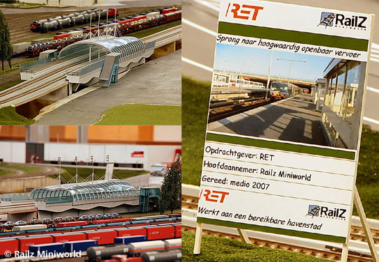
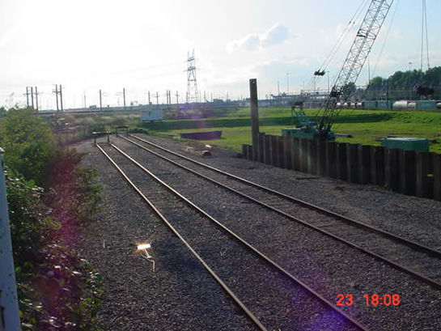
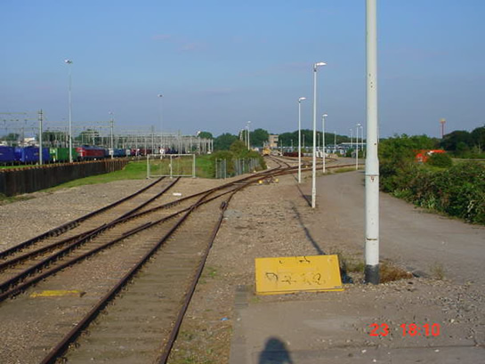
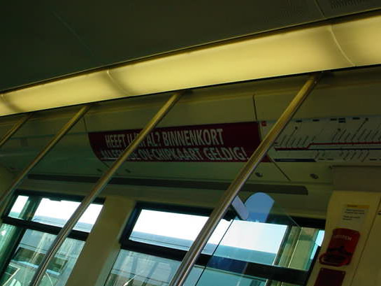
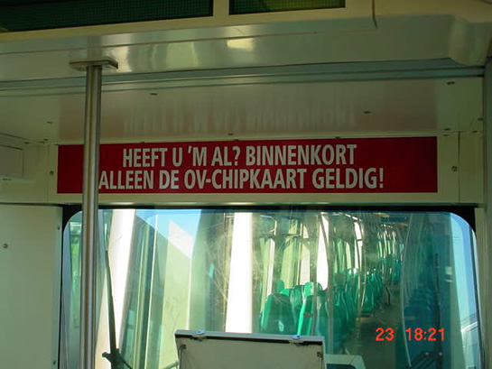

Metrobaan bij RailZ Miniworld bijna gereed en meer nieuws...
- maandag 01 december 2008 10:44
- Geschreven door Joachim
Bij RailZ Miniworld wordt aanstaande zaterdag honderd vierkante meter nieuwe modelbaan geopend. De afgelopen maanden is hard gewerkt om het nieuwe deel gereed te krijgen, waar het thema "stad" centraal staat. In samenwerking met de RET is er bij RailZ een metrobaan geheel op schaal nagebouwd. De metrobaan bevat drie stations, die kenmerken hebben van bijvoorbeeld station Nesselande, Vijfsluizen, Alexander en Rijnhaven. Ook enkele tunnelingangen zijn op schaal nagebouwd. Al dit moois is vanaf aanstaande zaterdag te bezichtigen.
Railz Miniworld is gevestigd op het Weena 745. Dat ligt op loopafstand van het Centraal Station. Bij het verlaten van het station of het stationsplein gaat u direct rechtsaf voorlangs café-restaurant Engels (groothandelsgebouw), waar ook de halteplaatsen voor vertrekkende bussen zijn. Nadat u de Conradstraat en Schaatsbaan oversteekt, treft u op de hoek de ingang van RailZ aan.

Een van de stations, met kenmerken van station Vijfsluizen en Nesselande.
 Bekijk ook de website van Railz Miniworld
Bekijk ook de website van Railz Miniworld
5253
Rijtuig 5253 is teruggekeerd van een revisie, die uitgevoerd werd in de lijnwerkplaats Waalhaven. Het rijtuig staat momenteel, samen met rijtuig 5208, op de zuidelijkste sporen van de remise 's-Gravenweg.
Werkemplacement Waalhaven
Naast het werkemplacement Waalhaven zijn onlangs damwanden geslagen. Naar verluidt wordt het werkemplacement weer teruggegeven aan de rechtmatige eigenaar. Het werkwagenmaterieel dat er stond, is met uitzondering van werkwagen 7002, overgebracht naar het werkemplacement van de remise 's-Gravenweg.

Naast het werkemplacement worden damwanden geslagen.

Het werkemplacement werd gebruikt voor het opstellen van werkwagens en voor het transport van metrorijtuigen per spoor.
RandstadRail
Twee weken geleden is het proefbedrijf op de RandstadRail Erasmuslijn officieel gestart. Dit is besloten door Peter Smit, regiobestuurder Verkeer en Vervoer van het Stadsgewest Haaglanden, na een positief advies van de onafhankelijk veiligheidsdeskundige (ISA) en de Inspectie van Verkeer en Waterstaat (IVW). Bij het testbedrijf is gebleken dat de veiligheid op het traject voldoende is aangetoond. Het is nog niet bekend wanneer het proefbedrijf overgaat in een normale exploitatie, waarbij ook passagiers opgenomen worden tussen de stations Nootdorp en Den Haag Centraal.
Introductie OV-chipkaart
Het is de bedoeling dat per 1 oktober de OV-chipkaart nog het enige, geldige vervoersbewijs in de Rotterdamse metro is. Dat betekent dat de toegangspoortjes op het metrostation alleen nog te openen zijn met een OV-chipkaart, eventueel in combinatie met een abonnement. De RET is onlangs begonnen met een campagne richting de reiziger, om die te attenderen op de aankomende verandering. In de metrorijtuigen zijn roze stickers aangebracht met daarop de tekst "Heeft u 'm al? Binnenkort alleen de OV-chipkaart geldig!".
Ook is half augustus een begin gemaakt met het voor de helft afsluiten van alle toegangspoortjes op de metrostations. De komende dagen worden de toegangspoortjes van de grotere stations in het centrum voor de helft afgesloten. Wanneer dat voltooid is, zal op alle metrostations 50% van de poortjes alleen nog te openen zijn met een OV-chipkaart.

Dezelfde stickers zijn ook in de rijtuigen Type T geplakt.
